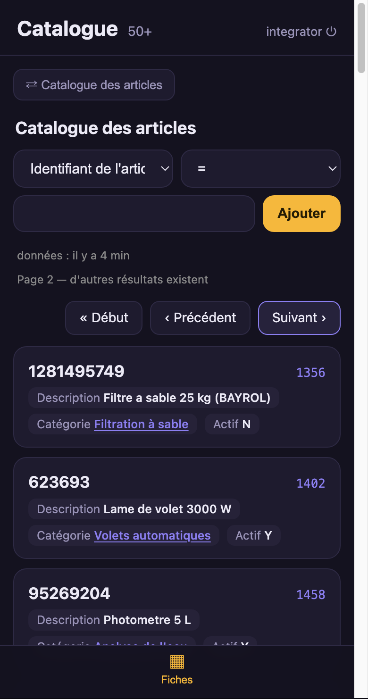

40 000 articles, parcourus page par page.
Deux exports CSV, deux entités, deux vues liées, une app. Le hub sert le catalogue par pages de 50 ; la PWA n'en charge jamais plus.
manifests/10-products.yaml
apiVersion: connectors.lumnik.io/v1kind: Connectormetadata: name: pwa-pagination-products connector_type: csv-file scopes: [pwa-pagination]spec: transport: kind: local path: /tmp/lumnik-scenario/pwa_pagination/m_product.csv parser: has_header: true after_process: none mapping: dataset: - require-headers: columns: [m_product_id, m_product_category_id, name, description, isactive] cell: - parse-number: { column: m_product_id, integer: true } - parse-number: { column: m_product_category_id, integer: true } - clean: columns: [name, description] strip: true remove-control-chars: true normalize-unicode: NFC - strip-invisible: { columns: [name] } - replace-smart-quotes: { columns: [description] }manifests/15-product-categories.yaml
apiVersion: connectors.lumnik.io/v1kind: Connectormetadata: name: pwa-pagination-product-categories connector_type: csv-file scopes: [pwa-pagination]spec: transport: kind: local path: /tmp/lumnik-scenario/pwa_pagination/m_product_category.csv parser: has_header: true after_process: none mapping: dataset: - require-headers: columns: [m_product_category_id, name, description, isactive] cell: - parse-number: { column: m_product_category_id, integer: true } - clean: columns: [name, description] strip: true remove-control-chars: true normalize-unicode: NFC - strip-invisible: { columns: [name] } - replace-smart-quotes: { columns: [name, description] } - decode-html-entities: { columns: [name, description] }$ lm validate -f manifests/10-products.yaml
✓ 10-products.yaml — valid
$ lm apply -f manifests/10-products.yaml
{"name":"pwa-pagination-products","connectorId":"4ac30156-e35e-40c5-99f1-4382e7b37d88","endpointsApplied":1}
$ lm validate -f manifests/15-product-categories.yaml
✓ 15-product-categories.yaml — valid
$ lm apply -f manifests/15-product-categories.yaml
{"name":"pwa-pagination-product-categories","connectorId":"7c3b7492-0363-4843-bab2-6b50330f031d","endpointsApplied":1}
$ lm connector run pwa-pagination-product-categories
run scheduled: 3c1505ef-8c91-4640-bba6-6c6a7bf5a993
$ lm run get 3c1505ef-8c91-4640-bba6-6c6a7bf5a993
ID CONNECTOR ENDPOINT STATUS IN OUT SKIPPED DEAD-LETTERS STARTED ENDED
3c1505ef pwa-pagination-product-categories default Completed 0 0 0 0 2026-10-21 15:12 2026-10-21 15:12
$ lm connector run pwa-pagination-products
run scheduled: 949ba81f-bc8f-4890-9ac3-71fe22e7392f
$ lm run get 949ba81f-bc8f-4890-9ac3-71fe22e7392f
ID CONNECTOR ENDPOINT STATUS IN OUT SKIPPED DEAD-LETTERS STARTED ENDED
949ba81f pwa-pagination-products default Completed 0 0 0 0 2026-10-21 15:12 2026-10-21 15:12- Connectors appliqués
- pwa-pagination-products, pwa-pagination-product-categories
preuves : replay.log · transform v1
manifests/20-product.yaml
kind: Entityname: PwaPaginationProductlabel: Article du cataloguedescription: "Articles du catalogue, enrichis avec leur catégorie. Une ligne représente un article."match: [product_id]scopes: [pwa-pagination]columns: product_id: label: "Identifiant de l'article" category_id: label: "Identifiant de la catégorie" category_name: label: "Catégorie" reference: label: "Référence" description: label: "Description" active: label: "Actif"sources: - table: t_pwa_pagination_products map: m_product_id: product_id m_product_category_id: category_id name: reference description: description isactive: activejoins: - table: t_pwa_pagination_product_categories from: category_id to: m_product_category_id map: name: category_namemanifests/25-category.yaml
kind: Entityname: PwaPaginationCategorylabel: Catégorie d'articlesdescription: "Catégories utilisées pour classer les articles du catalogue. Une ligne représente une catégorie."match: [category_id]scopes: [pwa-pagination]columns: category_id: label: "Identifiant de la catégorie" name: label: "Catégorie" description: label: "Description" active: label: "Active"sources: - table: t_pwa_pagination_product_categories map: m_product_category_id: category_id name: name description: description isactive: active$ lm entity apply -f manifests/20-product.yaml
Applied entity "PwaPaginationProduct" → connector."v_pwapaginationproduct"
$ lm entity apply -f manifests/25-category.yaml
Applied entity "PwaPaginationCategory" → connector."v_pwapaginationcategory"- PwaPaginationProduct
- v_pwapaginationproduct
- PwaPaginationCategory
- v_pwapaginationcategory
preuves : replay.log · transform v1
manifests/30-products-view.yaml
apiVersion: apps.lumnik.io/v1kind: Viewmetadata: name: pwa-pagination-productsspec: scope: pwa-pagination table: connector.v_pwapaginationproduct title: Catalogue des articles columns: [product_id, reference, description, category_name, active] links: - column: category_name targetView: pwa-pagination-categories filters: name: "{category_name}"manifests/35-categories-view.yaml
apiVersion: apps.lumnik.io/v1kind: Viewmetadata: name: pwa-pagination-categoriesspec: scope: pwa-pagination table: connector.v_pwapaginationcategory title: Catégories columns: [name, description, active] links: - column: name targetView: pwa-pagination-products filters: category_name: "{name}"$ lm view apply -f manifests/30-products-view.yaml
applied: pwa-pagination-products (scope pwa-pagination)
$ lm view apply -f manifests/35-categories-view.yaml
applied: pwa-pagination-categories (scope pwa-pagination)
$ lm view list --scope pwa-pagination
NAME SCOPE TITLE
pwa-pagination-categories pwa-pagination Catégories
pwa-pagination-products pwa-pagination Catalogue des articles- pwa-pagination-products
- pwa-pagination
- pwa-pagination-categories
- pwa-pagination
preuves : replay.log · transform v1
manifests/40-pwa-pagination-app.yaml
apiVersion: apps.lumnik.io/v1kind: Appmetadata: name: pwa-paginationspec: title: Catalogue scope: pwa-pagination icon: generic theme: accentColor: "#8b7ff0" backgroundColor: "#14121f" tabs: [fiches] default: false$ lm app apply -f manifests/40-pwa-pagination-app.yaml
Applied app "pwa-pagination" → scope pwa-pagination
tabs: fiches- App
- pwa-pagination
- Onglets
- fiches
preuves : replay.log · transform v1


- Lignes par page
- 50
- Articles parcourus, chacun une fois
- 40233
preuves : replay.log · transform v1
Limites
- Curseur opaque ; pas de saut direct à la page n.
- Le rejeu garde le journal du runner, pas la sortie de chaque commande ; les résultats en sont extraits.
- Données synthétiques.